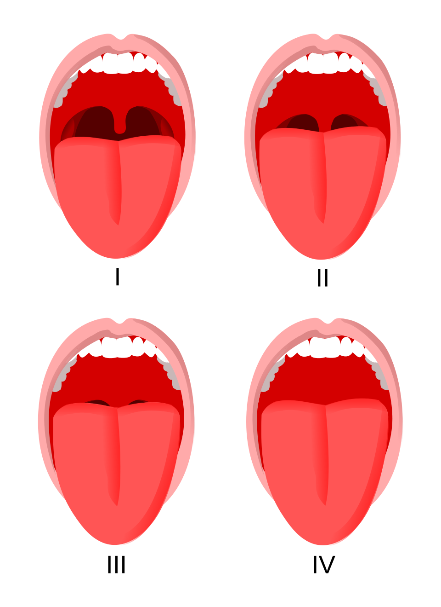
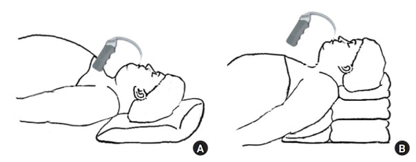
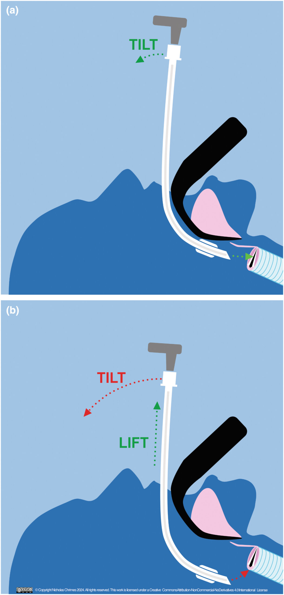
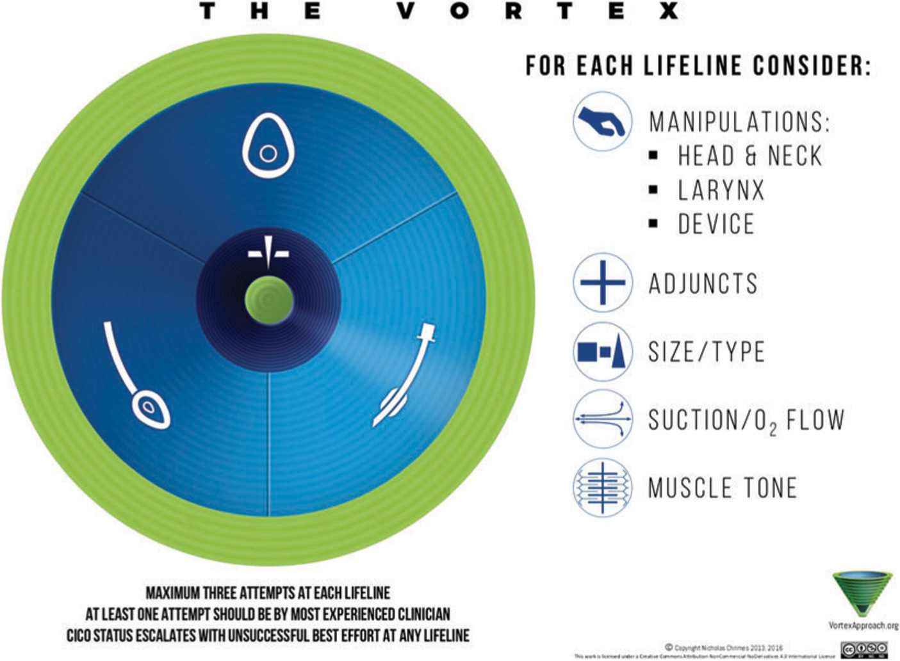
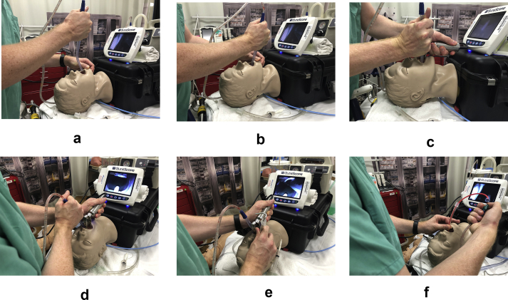

AIRWAY MANAGEMENT & ENDOTRACHEAL INTUBATION
呼吸道處置與氣管插管：講義重點
急診與重症的插管不只是把管子放過聲帶，而是在時間壓力與資訊不完整下的決策過程。本頁整理講義各章重點，供課前預習與課後複習。
本頁為教學用途，不能取代臨床判斷。藥物劑量請依院內規範與實際藥品濃度確認。
插管適應症
呼吸道維持或保護失敗
GCS < 8、急性呼吸道水腫。
通氣或氧合失敗
即使給予最大的非侵襲性支持（NIV、HFNC）仍無法維持：頑固性低血氧、嚴重高碳酸血症、呼吸肌疲乏。
預期臨床病程
目前代償但預期快速惡化，需主動確保呼吸道：擴大中的頸部血腫；嚴重心因性或敗血性休克（降低呼吸肌代謝需求）。
評估與準備
LEMON：預測解剖上的困難呼吸道
- Look externally：外觀上的第一印象（gestalt），看到下列任一項就要預期困難
- 顏面外傷：出血、骨折變形，影響面罩密合與喉鏡視野
- 門牙過大或暴牙：佔據口腔空間，刀片不易置入、視線受阻
- 鬍鬚：面罩難以密合，BVM 通氣困難
- 舌頭過大：擋住視野，刀片難以將舌頭推開
- Evaluate 3-3-2：張口 ≥ 3 指、下巴到舌骨 ≥ 3 指、舌骨到甲狀軟骨切迹 ≥ 2 指
- Mallampati 分級 I–IV
- Obstruction / Obesity
- Neck mobility

Mallampati 分級。Jmarchn, Wikimedia Commons, CC BY-SA 3.0。
擺位
一般採 sniffing position，讓口腔、咽、喉三軸對齊。肥胖病人採 ramped position：墊高頭與肩膀，讓外耳道與胸骨上切迹對齊。

(A) Sniffing；(B) Ramped。Lee S et al., CC BY-NC 4.0。
預給氧
- 3 分鐘潮氣量呼吸、高 FiO₂ 去氮；病人越不穩定，預給氧越要徹底。
- 工具：鼻導管、NRM、BVM 加 PEEP 閥、HFNC、NIV / NIPPV。
- 窒息期給氧（NO DESAT）：插管全程鼻導管 15 L/min，延長安全窒息時間。
- 氧合血紅素解離曲線：PaO₂ 降到約 60 mmHg 以下就進入陡降段，SpO₂ 會快速下滑；預給氧的目的就是讓病人停在平坦段。
插管前正壓：PEEP 給對的病人
出血性外傷、肺正常
用 ZEEP。PEEP 只會減少靜脈回流。
心因性休克、分流生理
插管前試 PEEP 5–8，常為血行動力學中性甚至有益；不要一開始就給 15。
給予方式
優先 NIPPV（PEEP 可量化）；HFNC 的 PEEP 太少不可依賴。Analog NIV：NIV 面罩加鼻導管，面罩接 BVM PEEP 閥，不需擠球。
Shock × shunt：分流的血液離開時飽和度與進入時相同。正常時以 SvO₂ 約 70% 進出，休克時只剩 50%。休克合併分流時，心輸出量稍降就可能讓 SpO₂ 數秒內從 85% 掉到 20%。PEEP 修正分流可減弱休克的影響。
策略與器材
Plan A–D
| Plan | 內容 |
|---|
| A 主要插管 | 成功率最高的策略、優化條件；最多 3 次，每次之間要有實質改變（刀片、操作者、姿勢） |
| B SGA 救援 | A 失敗但仍可通氣：放 SGA / LMA 恢復氧合 |
| C 面罩 | 雙手 C-E 手法 BVM，加口咽或鼻咽呼吸道 |
| D FONA | A–C 皆失敗，宣告 CICO，轉外科呼吸道（環甲膜切開） |
直接喉鏡（DL）與影像喉鏡（VL）
- Hyperangulated 與否看刀片設計與廠牌，不能只看號數；有些廠牌角度隨號數增加。
- Hyperangulated 刀片必須搭配專用硬式管芯。
- DL 技巧：刀尖放進會厭谷，沿 45° 往前上方提。
- VL：刀片不要插太深。聲帶間看到環狀軟骨（Kovacs’ sign）代表插太深、角度太陡；理想位置是螢幕上聲門下方保留空間，方便看送管。
Hyperangulated VL 送管：Cooper manoeuvre

© Nicholas Chrimes 2024, CC BY-NC-ND 4.0。
不要把管子往後朝上門牙扳，管尖會頂到氣管前壁。
- 管尖帶到距聲門 1–2 cm（Get Between, Below, Before）
- 沿管芯軸向往上提到聲門高度
- 只做 10–20° 的小傾斜或旋轉
- 退出管芯，推進到 cuff 剛過聲帶
插管藥物
| 誘導劑 | 劑量 | 特性 | 使用與注意 |
|---|
| Ketamine | 1.5–2 mg/kg | 擬交感 | 休克、嚴重氣喘；心肌缺血需謹慎 |
| Etomidate | 0.3 mg/kg | 血行動力學最穩定 | 多數休克、TBI |
| Propofol | 1–2 mg/kg | 血管擴張、心肌抑制 | 不穩定時減量或避免 |
| Midazolam | 0.1–0.2 mg/kg | 起效慢（2–3 分鐘）、低血壓 | 非急診 RSI 首選；HNI 可用 1–2 mg 輔助 |
肌肉鬆弛劑
Succinylcholine 1.5 mg/kg
起效極快。高血鉀、燒傷、壓砸傷禁用。
Rocuronium 1.2 mg/kg
RSI 劑量起效約 1 分鐘、接近 Sux，但作用時間長。
| Rocuronium 劑量 | 用途 | 起效 |
|---|
| 0.3 mg/kg | ED95 | — |
| 0.6 mg/kg | 一般插管 | 1–2 分鐘 |
| 1–1.2 mg/kg | RSI | 約 1 分鐘 |
| 0.1–0.2 mg/kg | 維持 | 需要時給 |
休克劑量與前置處理
減鎮靜劑，不減肌鬆劑。休克病人誘導劑大幅減量（例如 ketamine 0.25–0.5 mg/kg）；rocuronium 維持 1.2–1.5 mg/kg 全劑量。
- 高風險病人預先抽好 push-dose pressor（epinephrine 或 norepinephrine）。
- TBI 或主動脈剝離：fentanyl 減弱插管的交感反應。
插管方式：RSI、DSI、清醒插管
DSI
缺氧而躁動、譫妄的病人：先給解離劑量 ketamine，完成預給氧後才給肌鬆劑。
清醒插管
CICO 風險過高時保留自主呼吸：局部麻醉、輕度鎮靜，搭配軟式內視鏡或 VL。
DSI 流程
- 解離：ketamine 1 mg/kg 緩慢推注，未解離再追加 0.5 mg/kg（多數在 1–1.5 mg/kg 解離）
- 預給氧：頭抬高 ≥ 30°；NRM 加鼻導管，SpO₂ < 95% 改 NIV CPAP 5–15 cmH₂O；可在此時放鼻胃管
- 去氮 3 分鐘後給肌鬆劑，並以鼻導管做窒息期給氧
- 肌鬆後 45–60 秒插管
困難呼吸道與危機處理
Cormack–Lehane 分級
I 聲帶完全可見；II 部分可見；III 只見會厭；IV 連會厭都看不到。III–IV 級代表困難插管。
Bougie
- 盲插時感受氣管環的 clicks，到達隆突時的 hold-up sign。
- Shake grip：bougie 對折握持，容易掌握尖端方向。
- Kiwi grip：管子與 bougie 握在同一手；尖端進入後放下喉鏡，左手逆時針旋轉管子沿 bougie 推入。
- Kiwi-D grip：bougie 尖端穿進管子的 Murphy eye，單手送入。
- 管子卡在杓狀軟骨：稍微退管、旋轉後再送。
管芯塑形與雙手喉鏡
- Straight-to-cuff，在 cuff 處彎 35°（hockey stick），送管時不擋視線；傳統弧形管芯會遮住聲門。
- 雙手喉鏡：操作者右手移動甲狀軟骨找到最佳視野，再由助手固定。
Vortex approach

© Nicholas Chrimes, VortexApproach.org, CC BY-NC-ND 4.0。
- 在面罩、SGA、ETT 三條生命線之間循環。
- 每條生命線最多 3 次，至少一次由最有經驗者執行。
- 每次嘗試前優化：頭頸與喉部操作、輔助器材、尺寸或類型、抽吸與氧流量、肌肉張力。
- 任一生命線盡力後仍失敗，CICO 狀態升級，進入 FONA。
CICO：Scalpel–Bougie–Tube
- Laryngeal handshake 找到環甲膜
- Stab：手術刀橫向刺穿環甲膜
- Twist：刀片轉 90°，刀鋒朝尾側
- Bougie：coudé 尖端沿刀片滑入氣管
- Tube：沿 bougie 套入 6.0 有套囊氣管內管
特殊情境
低血氧
插管前最大化氧氣儲備，目標 SpO₂ > 95%。
低血壓
正壓通氣與誘導藥物會加重低血壓；插管前 MAP > 65 mmHg。
代謝性酸中毒
縮短窒息時間，插管後立即給高分鐘通氣量。
Hemodynamically Neutral Intubation（HNI）
右心衰竭、心包填塞、或高劑量升壓劑仍休克的病人，從負壓呼吸轉為正壓可能致命地減少靜脈回流。準備動脈導管與 push-dose epinephrine。
- Ketamine 20–30 mg 分次給至解離，可合併 midazolam 2 mg
- 不給肌鬆劑（窒息是敵人），輕度局部麻醉
- 病人自主呼吸下以 VL 加 bougie 插管
- 失敗時 rocuronium 1.2 mg/kg，管子通過後立即 sugammadex 16 mg/kg，窒息控制在約 3 分鐘
右心衰竭與肺高壓
誘導藥物使交感張力喪失，加上正壓使肺血管阻力上升，可快速誘發右心衰竭與心跳停止。及早用升壓劑維持 SVR；嚴格避免缺氧、高碳酸血症與酸中毒；強烈建議 HNI。
SALAD：處理大量嘔吐或上消化道出血

Root CW et al., CC BY-NC-ND 4.0。
- 抽吸管先行（a–b）
- 持續抽吸下放入喉鏡刀片（c）
- 抽吸管停放並固定在嘴巴左側（d）
- 插管（e）；通氣前先抽吸管內（f）